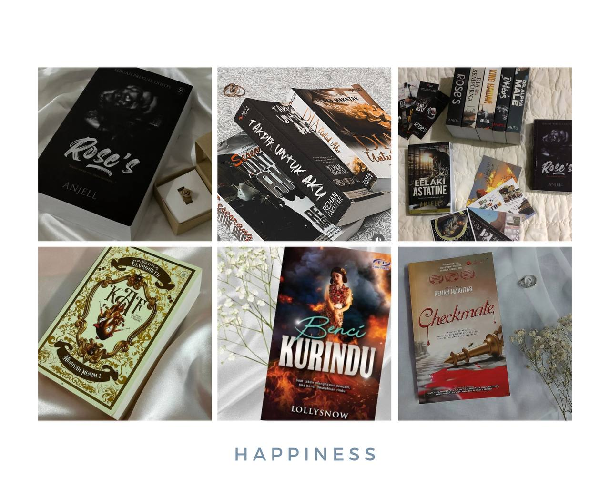

"A hobby a day keeps the doldrums away- Phyllis McGinley-"
Reading novel

"I started delving into the world of novels from a young age. One of my favorite writers is Ain Maisarah. He likes to publish fantasy novels that suit children's thinking. But when I reached the age of adolescence and adulthood I began to get stuck in the world of writing that is more mature and suitable for my thoughts. My favorite writers are Rehan Makhtar and Anjell. For me, they are good at catching the reader's emotions. There has never been a single novel from their releases that I haven't bought and read. In addition, by reading novels we can improve our vocabulary, grammar as well as improve in the field of writing."
I also like to keep a special collection of novels even though I already have the novels. There is no sense of waste because when I am no longer with the novel I can sell it. The prices of novels that are older in the market and not reprinted are more expensive than other novels, from there I can get my money back.Maybe before I had an interest in studying literature and writing but all those things stopped when I had to follow the wishes of my parents. Their priorities are more important than mineFor now, I can only be a reader even though I intend to publish my own book, but I have to be self-aware and gain a lot of knowledge in the field so that the work produced is of better quality and can teach others.
Apart from spending time reading novels, I also like to sleep no matter day or night. When there is nothing else to do I will take the opportunity to sleep. For me, sleep is not only to relax the mind, but sleep can help me reduce stress with the real world.